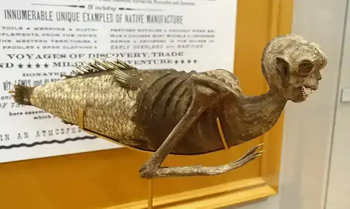

The object
The Feejee Mermaid was a composite: the upper body of a small monkey, the lower body of a fish, joined and dried so that the seam looked like skin. Barnum exhibited it in New York in 1842, with a promotional campaign that included a fake naturalist and a newspaper controversy he had arranged himself.
Maps, diagrams and images


The object survives — one version is in the Peabody Museum at Harvard — and the construction is visible under examination: the join, the different preservation of the two halves, and the anatomy that belongs to no single animal.
Why it worked
Barnum's genius was not the object but the framing. He presented it as a curiosity rather than a scientific specimen, generated the controversy himself, and let the audience argue about authenticity — which is exactly the mechanism that keeps modern fringe claims alive. The mermaid did not need to be believed; it needed to be discussed.
Documented: the object is a composite of monkey and fish, made by hand.
Documented: Barnum's campaign manufactured the controversy that sold tickets.
Documented: similar composites were made in Japan and sold as curiosities for centuries.
Not a mystery: nobody with access to the object has ever argued it is a real animal.
Why it matters: it is the ancestor of every 'they don't want you to know' exhibit, and the mechanism is unchanged.
Why it is in the archive
Because it is the origin point of a business model the archive spends its time on: an object that cannot survive examination, presented in a way that makes examination the point. Barnum would have understood the internet immediately.
Open resources on this topic
- PapersOpen-access articles: DOAJ · PubMed Central · Internet Archive Scholar
- BooksPublic-domain and borrowable copies: Open Library · Project Gutenberg · Google Books · Internet Archive
Cite this page
Momin, S. (2026). The Feejee Mermaid. The Larger World Archive. https://drsamonline.github.io/LARGE_GLOBE/feejee-mermaid.htmlMomin, Sohil. “The Feejee Mermaid.” The Larger World Archive, 2026, https://drsamonline.github.io/LARGE_GLOBE/feejee-mermaid.html.Momin, Sohil. “The Feejee Mermaid.” The Larger World Archive, 2026. https://drsamonline.github.io/LARGE_GLOBE/feejee-mermaid.html.@misc{the2026feejee,
author = {Momin, Sohil},
title = {The Feejee Mermaid},
year = {2026},
howpublished = {The Larger World Archive},
url = {https://drsamonline.github.io/LARGE_GLOBE/feejee-mermaid.html},
note = {Last reviewed 20 November 2026}
}Last reviewed 20 November 2026 · Corrections policy · this page is not peer reviewed
Sources for this page
- Wikipedia, “Fiji mermaid” — the objects and their constructionen.wikipedia.org
- Wikipedia, “P. T. Barnum” — the campaign and the business modelen.wikipedia.org
- Wikipedia, “Peabody Museum of Archaeology and Ethnology” — where one survivesen.wikipedia.org
- Wikipedia, “Hoax” — the genre the mermaid belongs toen.wikipedia.org